Social Advertising
Art directing social-first advertising and brand content across international markets.
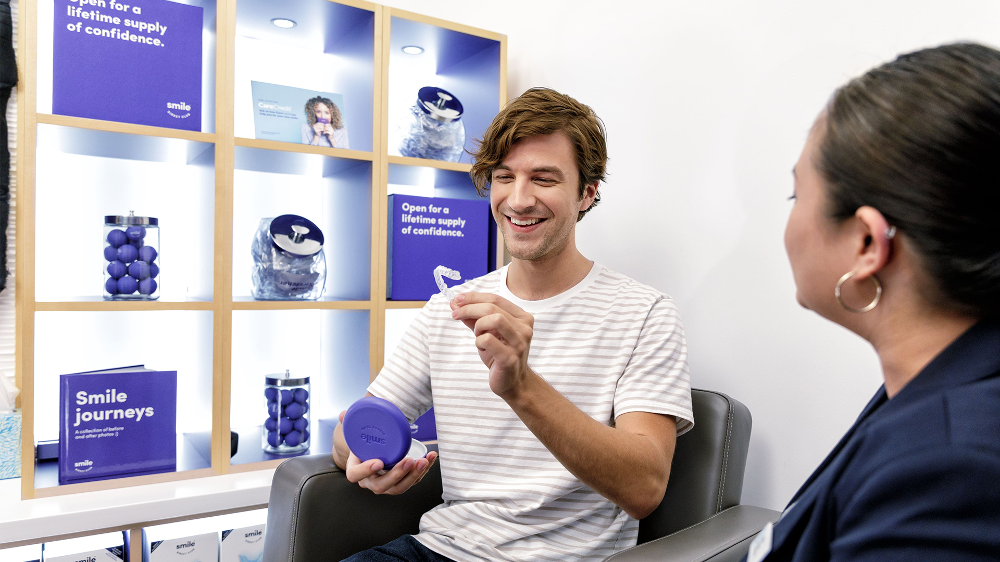
Brand
Overview
SmileDirectClub built much of its brand through social media, using a mix of polished campaign photography, highly stylized product imagery, and user-generated content across multiple platforms.
I developed social-first creative for brand campaigns, seasonal promotions, and ongoing engagement, translating broader marketing strategies into work that could perform across channels while remaining visually consistent and recognizable.
My Role
I art directed concepts and campaign systems across paid and organic social, working closely with copywriters, creative directors, strategists, and project managers from initial direction through final execution.
Within the creative team, I specialized in global brand work, partnering with regional teams across the United Kingdom, Australia, and Asia to adapt campaigns for different markets. I also helped develop the creative approach for SmileDirectClub’s first location in France.
Executions


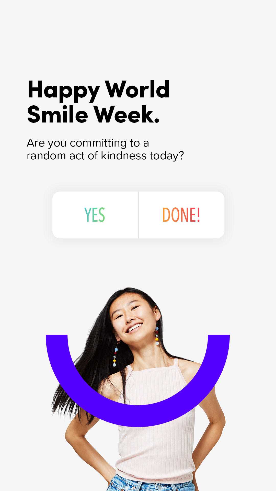
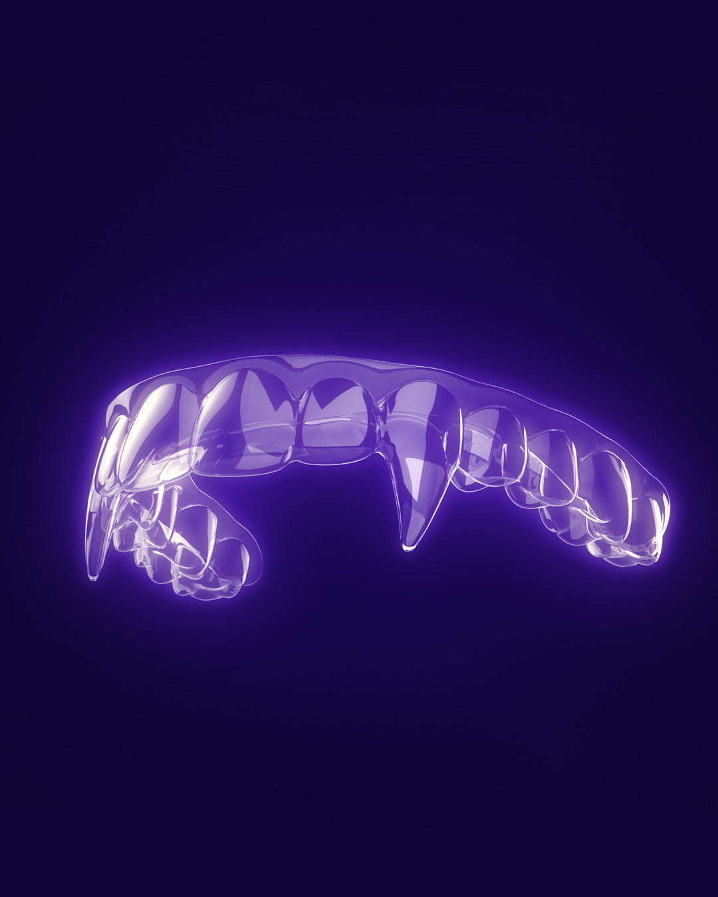
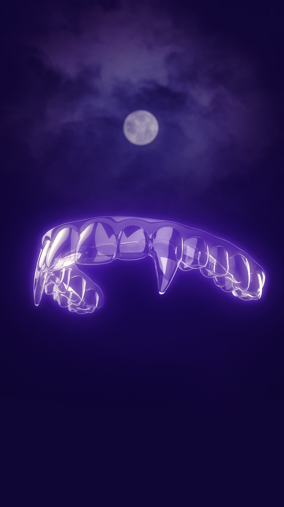

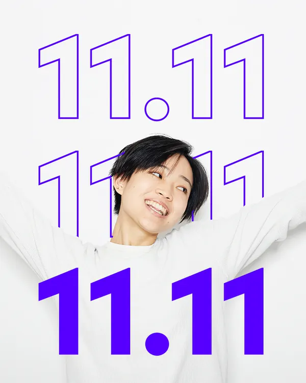
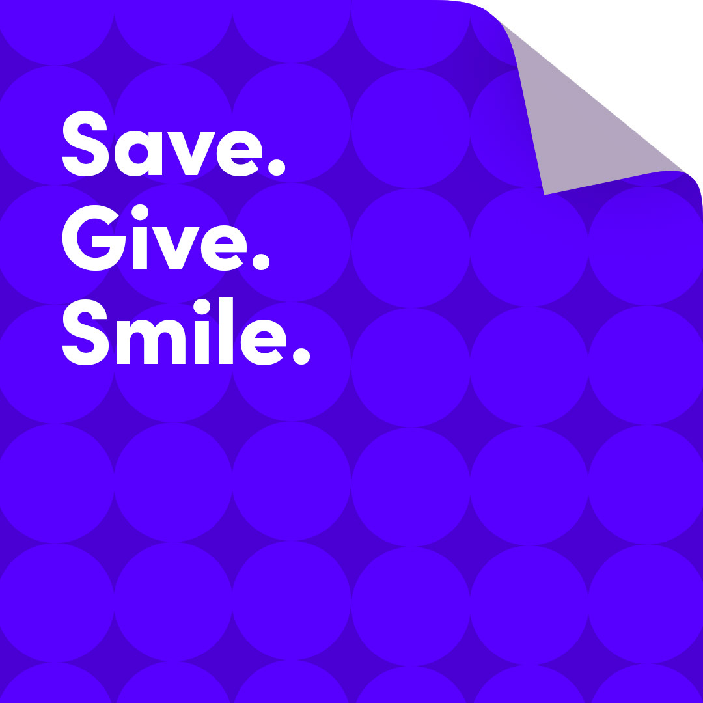
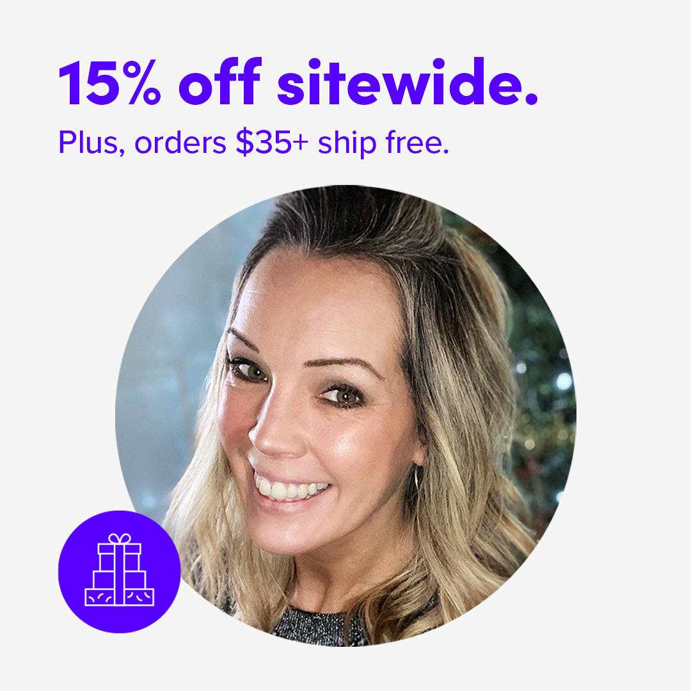
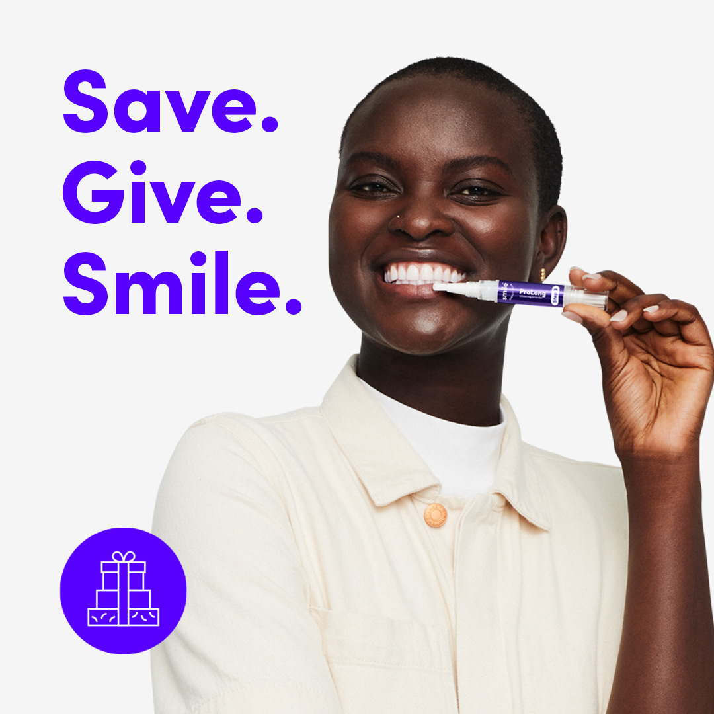

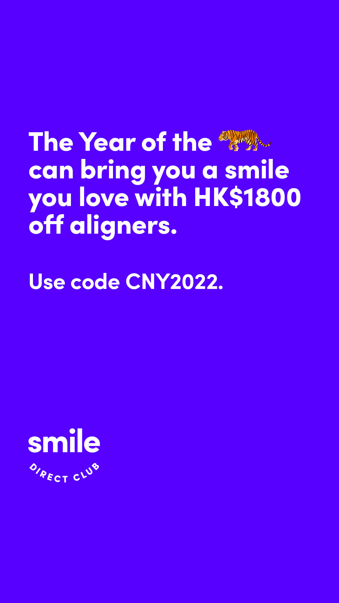

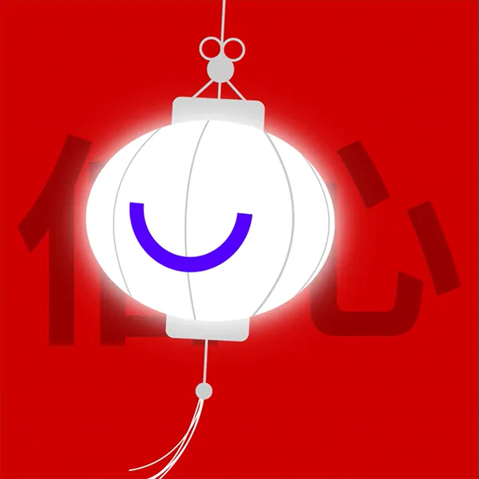
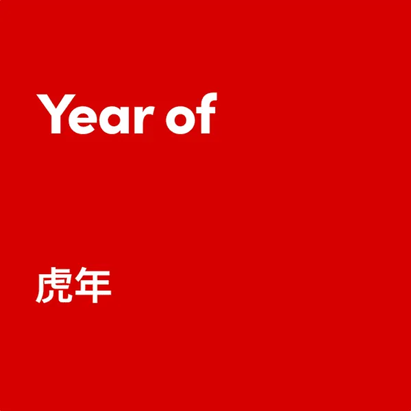